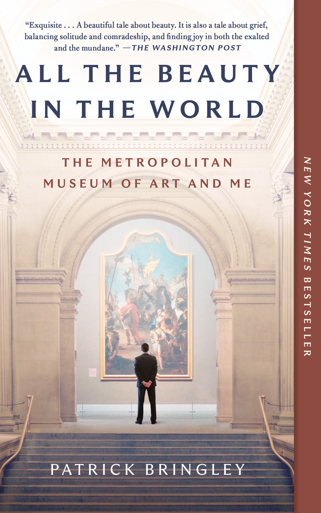
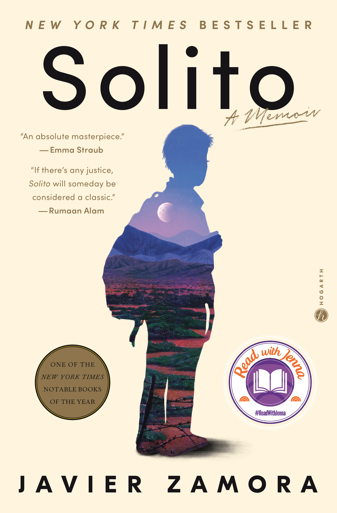
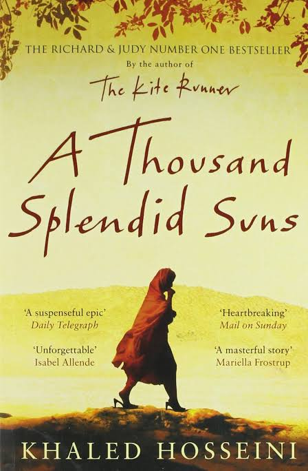
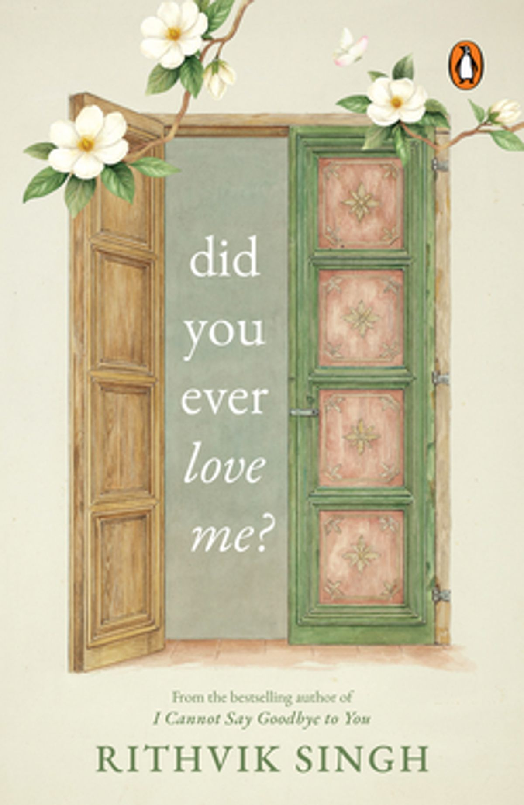

A Little Life
by Hanya Yanagihara
A novel about four college friends whose lives remain connected as they grow older, focusing especially on friendship, relationships, trauma, and personal struggles.
Progress: 50%
My Personal Book Club & Reading Lists
Here I keep track of the books I am currently reading, books I have finished, and books I want to read next.
by Hanya Yanagihara
A novel about four college friends whose lives remain connected as they grow older, focusing especially on friendship, relationships, trauma, and personal struggles.
Progress: 50%

by Patrick Bringley
A thoughtful memoir about a former Metropolitan Museum of Art guard who reflects on grief, healing, and the beauty he discovers in art and everyday life.
Progress: 25%

by Javier Zamora
A memoir about Javier Zamora's journey from El Salvador to the United States as a child, exploring migration, family, fear, and resilience.

by Khaled Hosseini
A novel about two women in Afghanistan whose lives become connected through hardship, family, friendship, and survival.

by Rithvik Singh
A collection that explores love, heartbreak, emotional vulnerability, relationships, and healing.
| Book | Author | Finished | Rating |
|---|---|---|---|
| On Earth We're Briefly Gorgeous | Ocean Vuong | ★★★★★ | |
| The Butterfly Garden | Dot Hutchison | ★★★★☆ | |
| Bad Feminist | Roxane Gay | ★★★★★ |